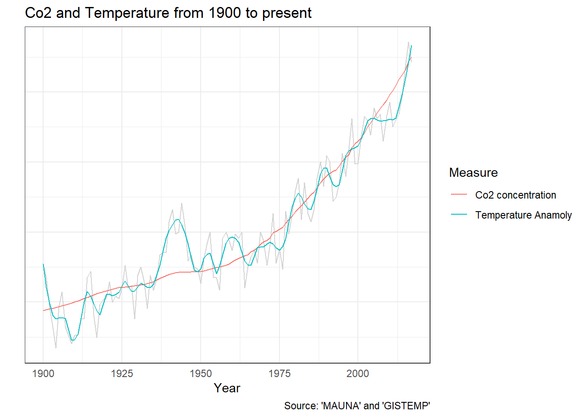
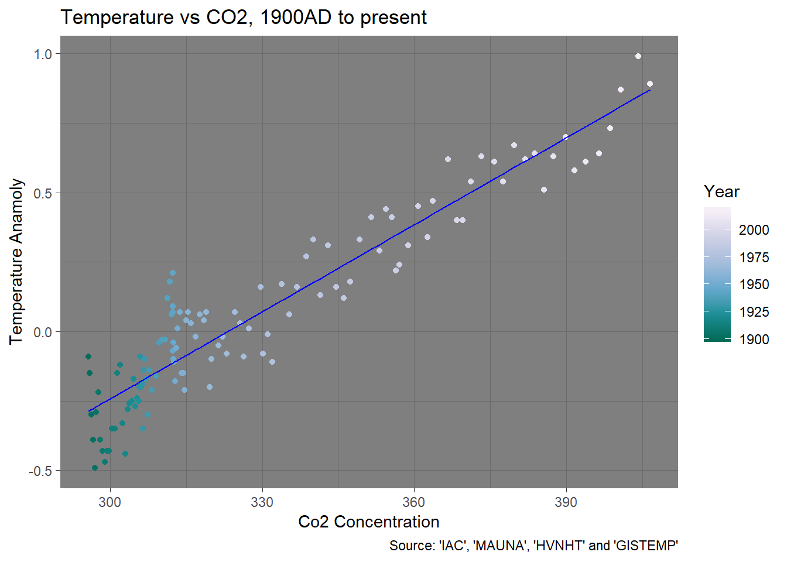

In Part 1 and Part 2 of this series we took a look at the global temperature record and the global Co2 concentration and had a look at how they relate.
In this article I’m going to check out the idea “The increase in global temperatures is largely caused by the increase in Co2 emissions”. There are limits to what we are going to be able to do with only two datasets at our disposal, but we can take it out round the block, kick the tires and see if it makes sense.
As we look at more datasets in later articles we might revisit this road test and see if we can put its conclusions on firmer foundations.
In Part 2 we discovered that it looks like the climate has undergone some dramatic shifts and I identified 3 periods I could see, the classic, transitional and modern periods.
While knowing about the classic and transitional periods is useful, really we are interested in whats going on in the modern period. So to make things a bit easier we’ll refine the question to be a bit simpler:
Is the increase in temperatures in the modern period caused by the increase in carbon dioxide concentration?
To start we are going to need to make some assumptions.
The first one is that the records we have downloaded so far are reasonably accurate. This means trusting the researchers that created them which conflicts with one of the original objectives of this series, which was to not rely on a appeal to authority. I’ve got some ideas on how to do some cross checking, but lets just see what we can with do with what we’ve got so far.
The next assumption is that increase in carbon dioxide concentrations that started around 1800 A.D. were primarily caused by human activity. The story is that around 1800 the industrial revolution kicked into full swing. Across the world we started digging up coal and oil and started burning it in sufficient quantities to start changing the concentration of carbon dioxide in the atmosphere.
From the previous assumption it follows that the change in carbon dioxide concentrations from the transitional period onward are not caused by changes in temperature.
The final one is a bit tricky to explain. Its that over the long to medium term the temperature at future dates is independant of the temperature in the past. IE that we are assuming that the temperature isn’t going up because the temperature is going up. That there isn’t some feedback mechanism thats piling temperature increase on top of temperature increase. I think its a pretty good one to make because we saw how the temperature bumbled around a stable value during the classic period. It didn’t go zooming off in the past to the extent that it is now. Without this assumption we aren’t going to be able to make any conclusions one way or the other.
In order to establish cause and effect ideally we would like to do some experiments. In those experiments we keep as many of aspects of the thing we are studying constant while changing another aspect.
From our ideas we make a prediction of what the result should be as a consequence of that change. Then we see if the results of the experiment match up with our predictions.
However in the case of global warming there are a few issues with that. We only have one earth, we are pretty attached to it and getting the funding to make planetary changes is a bitch.
But if we look back at the record maybe we can see times where the change we would like to test has already been made.
We’ve already seen one example. When we started increasing the carbon dioxide concentration back in the 1800’s.
But around that time the climate system seemed to really change in some sort of dramatic way. It would be really nice if we could hold that change constant and then see what happens if the carbon dioxide concentration changes.
Lets redo that ‘Co2 and Temperature’ graph from part 2 and zoom in on the modern period.

We can now see in more detail that dramatic zoom-up that occurred in the modern period. This lets us can see that the 1800’s wasn’t the only time that the trend in carbon dioxide concentrations changed. Carbon dioxide has been on the increase the whole time but that increase got even faster in the 1960’s. I’m guessing its because global industrialization lept up to a new level after world war 2. You can see that pick up in the pace as a “bend” in the graph.
It almost looks like the carbon dioxide concentrations are some sort of smoothed trend line for temperature. And while the plots have been scaled so they line-up over each other on purpose, the scaling doesn’t effect the shape of that curve. This graph makes it pretty obvious that the increase in temperature and the increase in carbon dioxide concentrations have been in perfect lock-step.
In this series I’m trying to present things in a way that allow us to geniunely understand the issue “intuitively”. But to really hit things home I’d like to do a statistical test that hopefully puts things on a firmer footing. Unfortunately understanding these statistical tests requires some detailed technical knowledge so unless you’ve done the right courses I’m going to have to ask you to trust me a bit.
However even if you don’t have a background in statistics you can see how the two datasets line up. These statistics just put some firm numbers around the natural intuition that the graph says something meaningful.
Lets repeat a graph we’ve already seen in Part 2. The graph of temperature vs carbon dioxide concentrations for the modern period. Because its relevant lets show it again, but unleash some machine learning goodness. The grand-daddy of them all, linear regression.

One of the neat things about machine learning algorithms is that you control what you tell them, so you can get them to “forget” about things you know on your behalf. This helps us be sure your we aren’t being predjudiced by our prior experience.
Prior to generating this graph I asked the machine to try to predict what the temperature anamoly should be given a carbon dioxide concentration. And when I did this I told it nothing about about time. It only knows about the yearly temperature and carbon dioxide concentration measurments, not when they occured.
Then I added that prediction to the graph as a blue line. You can see those predictions running right through the middle of the graph. By crunching a lot of numbers and doing a lot of math the machine has found the line that all the dots seem to imply.
We probably could have drawn the same line ourselves. But because we got the machine to do it we get some useful numbers. From between 1900 A.D. and the present day:
To me this is pretty amazing. Countless temperature and carbon dioxide measurements by many thousands of dedicated people, taken over the course of a hundred years, in cities, in the country, in the tropics, in the artic and antartic, from over the land and the oceans. And in the end we get this straight line.
That straight line is saying something.
That is true. But it is a powerful piece of evidence. Our intuitions and statistics say something is afoot.
There are several possibilites.
One is that the increase in carbon dioxide concentration is caused by the change in temperature. But thats eliminated by our assumptions.
Next is the flip-side, that the increase in temperature is caused by changes in carbon dioxide concentration. Thats the idea we are road testing so it lines up.
It could be caused by whats called a confounding variable. Its possible that temperature and carbon dioxide are rising due to some other effect that we aren’t taking into account in our analysis.
One suggestion that I’ve heard is the “heat island effect” of cities. That idea is that the average temperature is going up because cities are hotter than the country. And if we have bigger cities we need to burn more fossil fuels to match.
But you need to find something that matches all the evidence we have. It needs to explain how the temperature bumbled around for ages up then shot up. It needs to explain why the temperature and carbon dioxide concentrations are so in lock-step. That straight line is going to be very hard to beat.
The evidence we’ve looked at in this article is perfectly in line with the idea that we are road testing, that the increase in temperatures in the modern period is caused by the increase in carbon dioxide concentration.
The rate of temperature change has changed. The rate of carbon dioxide concentration change has changed, but the two are just staying in lock step. Even the machine say so.
Great styling, nice pick-up, feels rock-steady in traffic and out on the highway. But we’ve only just started cruising the lot so maybe we can find something better. 4.5 Stars.
GISTEMP Team, 2018: GISS Surface Temperature Analysis (GISTEMP). NASA Goddard Institute for Space Studies.
Dataset accessed 2018-09-03 at https://data.giss.nasa.gov/gistemp/.
Northern Hemisphere temperatures reconstructed by statistically combining long-term fluctuations recorded by 11 low-resolution proxy series (lake and ocean sediments, ice cores, stalagmites) and short- term variations recorded by 7 tree-rings series. The reconstruction was calibrated by matching its mean and variance to the instrumental record of Northern Hemisphere annual mean temperature over the period of overlap (CE 1856-1979).
Credits: Moberg, A., D.M. Sonechkin, K. Holmgren, N.M. Datsenko, and W. Karlén. 2005. Highly variable Northern Hemisphere temperatures reconstructed from low- and high-resolution proxy data. Nature, Vol. 433, pp. 613-617.
Dataset accessed 2018-09-03 at http://www.temperaturerecord.org/.
Institute for Atmospheric and Climate Science (IAC) at Eidgenössische Technische Hochschule in Zürich, Switzerland.
Dataset accessed 2018-09-03 at Historical CO2 Datasets.
C. D. Keeling, S. C. Piper, R. B. Bacastow, M. Wahlen, T. P. Whorf, M. Heimann, and H. A. Meijer, Exchanges of atmospheric CO2 and 13CO2 with the terrestrial biosphere and oceans from 1978 to 2000. I. Global aspects, SIO Reference Series, No. 01-06, Scripps Institution of Oceanography, San Diego, 88 pages, 2001.
Dataset accessed 2018-09-03 at Historical CO2 Datasets